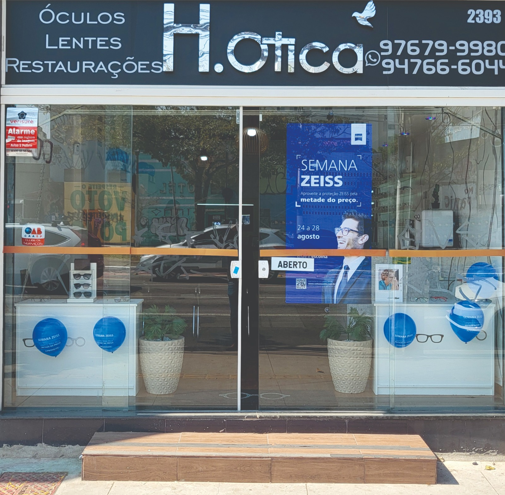
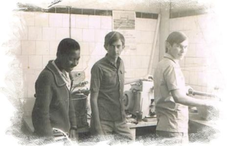
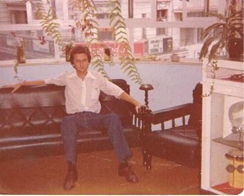
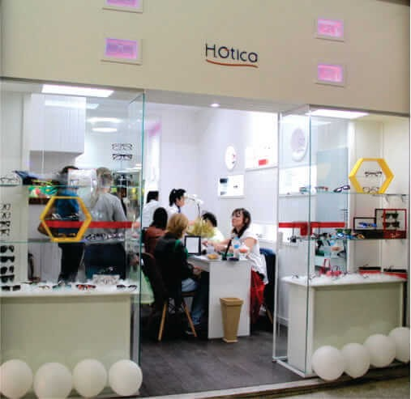
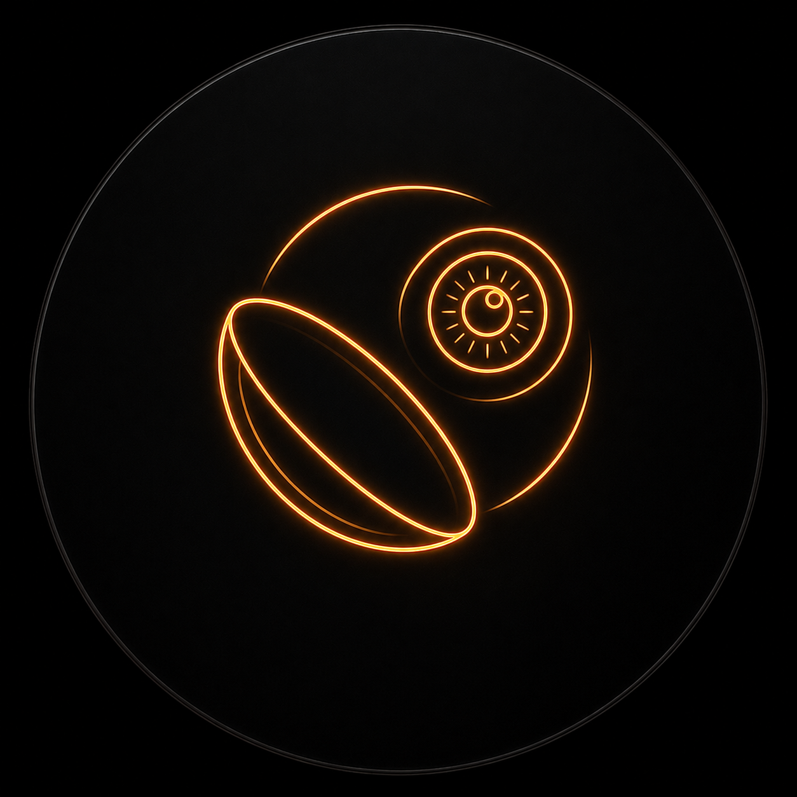
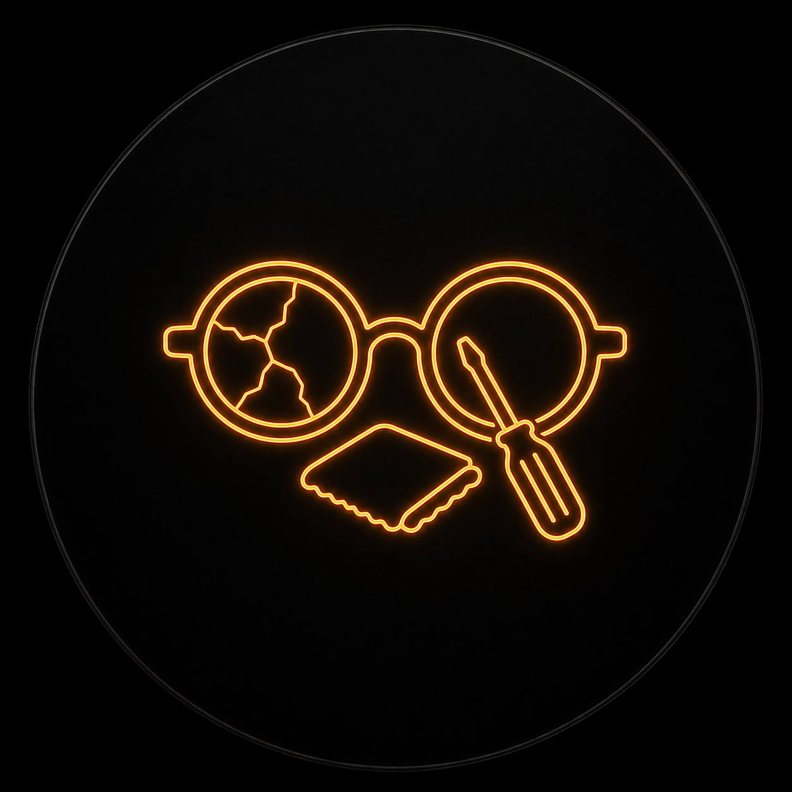

H.Otica
Enxergue a vida com seus olhos | O resto, deixe conosco.
História
Anos de Dedicação e Amor
Começo em 1966

"O Sr. Hely Green Iniciou sua carreira aos 18 anos de idade, em um laboratório ótico onde se fabricavam lentes oftálmicas, em Marília – SP".
Mudança 1970

Veio para São Paulo aos 22 anos e deu continuidade ao seu trabalho como balconista e montador de óculos na OTICA BARÃO, no centro de São Paulo. Fez vários cursos de especialização no ramo e com sua dedicação ao trabalho conquistou confiança e seriedade dos clientes.
H.Otica 1989

" ...a HELYOTICA, em 1989 no centro de São Paulo, juntamente com seus filhos Helton e Hely Junior, que também iniciaram no ramo muito cedo. Hoje com 34 anos de existência a HELYOTICA é sinônimo de qualidade e dedicação e a cada dia conquistando novos sonhos.
H.Otica 2026
38 Anos de Experiencia e Paixão, agora estamos de endereço novo. Rua Vergueiro, 2393 - Vila Mariana
Nossos Serviços
Óculos
Armações para todos os estilos: elegantes, sociais, esportivas, discretas, marcantes e leves.
Lentes

Lentes multifocais com mais nitidez, amplo campo de visão e proteção avançada contra os raios solares.
Restauração

Restauração de óculos quebrados e deformados. deixamos seus óculos como novos.